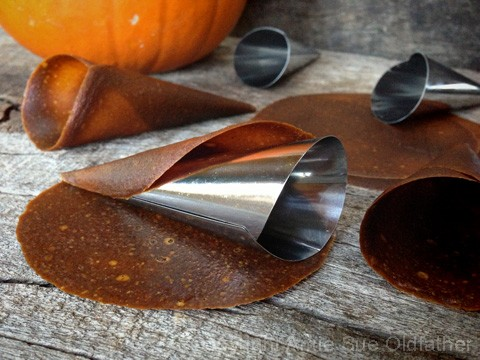
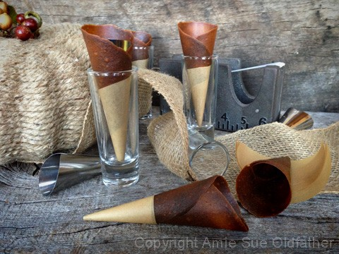
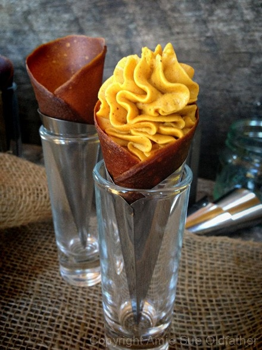

Pumpkin Pie Sundae Cone
These little sundae cones will be perfect for the up and coming holidays or just as a simple treat to enjoy with your family around the table, or for that stroll outside after dinner.
Because these are a frozen dessert, you can make these well in advance. Which takes the pressure off when trying to put together a whole meal in one day. You can also serve this right after piping the ice cream in the cone. Either way, they are quite amazing.
Recipe mashup:
Yields roughly 6-8 cones
Preparation:
Cones:
- Prepare the Raw Pumpkin Spiced Butternut Wraps. I used round leathers that I had created. They were about 5″ in diameter. Lay the leather flat on the counter top and place a cone mold on the edge. Holding the leather on the mold, roll until the wrap is snug up against the mold.
- Dip your finger in water and dampen the edge of the wrap. Press the edge to the body of the cone and hold for a few seconds. This will cause it to seal.
- This is optional, but I wrapped the tips of the cone in brown parchment paper.
- Place each cone in a small glass, one that will hold it upright.
- Place in the freezer. I did this so that when the wet ice cream was piped in, it wouldn’t soften the leather too much.
Ice cream:
- Follow the directions on making the ice cream.
- Once it is done in the ice cream machine, place the ice cream into a piping bag fitted with a large star tip.
- Poke the nose of the tip as far into the cone as you can and apply pressure on the piping bag. Slowly withdrawal the piping bag as you pipe the ice cream into the cone. Make a swirling action once you reach the top.
- Repeat this process until all of the cones are filled.
- Immediately place the ice cream cones in the freezer until firm. Or eat right away!
- By the way, Bob insisted that I tell you he loves these.. guess I better make some more. :)



© AmieSue.com